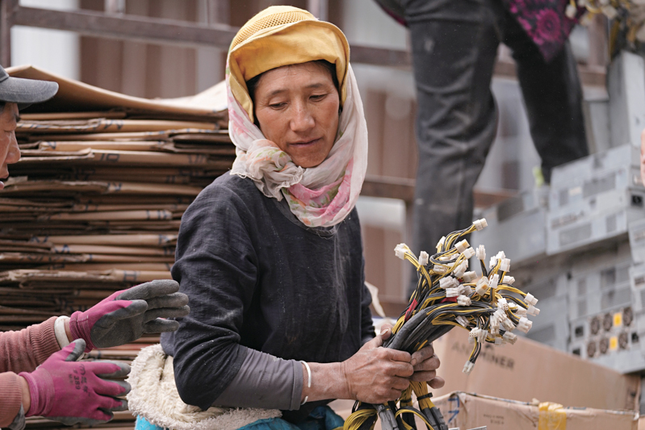

不做的事
预测过程
谁先倒、何时倒、跌多少、下一张多米诺骨牌在哪里。这些答案看起来精确，实际最容易制造虚假的确定感。
芯片、云、算力租赁、模型公司、债务、能源与需求彼此缠绕。逐家公司推演谁先出事、冲击传到哪里，研究成本极高，结论仍可能是错的。
谁先倒、何时倒、跌多少、下一张多米诺骨牌在哪里。这些答案看起来精确，实际最容易制造虚假的确定感。
等到有人不得不卖，行业开始洗牌，昂贵的算力与智力被重新定价，乐观叙事被现实打断。
触发源可以完全不同：可能是韩国金融危机式的外部流动性冲击，也可能是甲骨文、CoreWeave或模型公司的现金流断裂。来源不是行动标准；它是否迫使行业重新配置资产，才是。
五次历史技术革命、正在发生的AI革命，再加上四年一轮的加密样本。技术线继续前进，金融线却会提前繁荣、过度扩张、被迫出清。
普通回调、坏消息和悲观评论都不够。真正的信号必须穿透价格，改变行业结构。
保证金、债务、现金流或赎回压力迫使参与者按市价处置资产，不再能够等待。
破产、重组、合并与订单重写开始改变谁能活下来、谁拥有基础设施。
GPU、数据中心和算力租赁从稀缺溢价回到按真实使用价值定价。
推理、模型与智能服务的单位价格显著下降，昂贵能力开始成为普及型投入。

真正的出清会落到具体的人和具体的资产上。曾经昂贵、稀缺、被视为通往未来的设备，被拆下、转运、重新寻找买家。那一刻，价格上的故事变成了现实里的处置。
高估假设下的价格、融资和产能需要被修复；能够解决真实问题的技术不会因此消失。出清甚至可能替下一轮普及支付成本。
资本用过度乐观的预期，建设了超出当期需求的铁路、光纤、数据中心与算力。
失败者承担损失，资产折价、债务重组、租赁价格下降，纸面价值回到现金流约束。
便宜的电力、光纤、流量、算力与智力进入企业和家庭，长期影响才真正展开。
我们总是高估技术的短期影响，低估它的长期威力。
它是在拒绝虚假的精确，把注意力从“什么时候跌”转向“什么事实已经改变”。
现在：观察谁开始被迫行动。
届时：重新判断幸存者、低成本基础设施与下一轮赢家，而不是默认买入已经失败的公司。